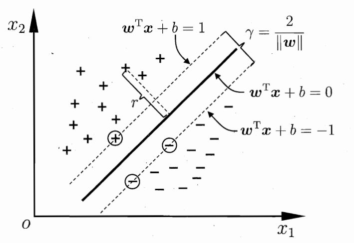
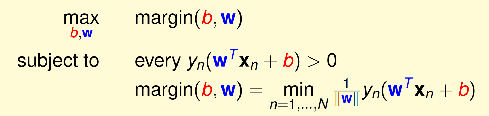
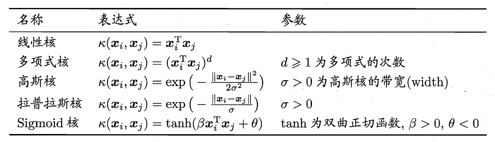
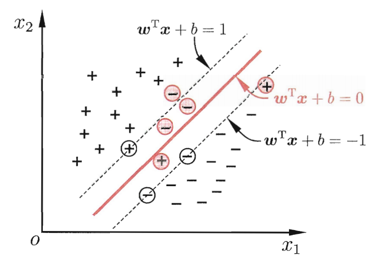
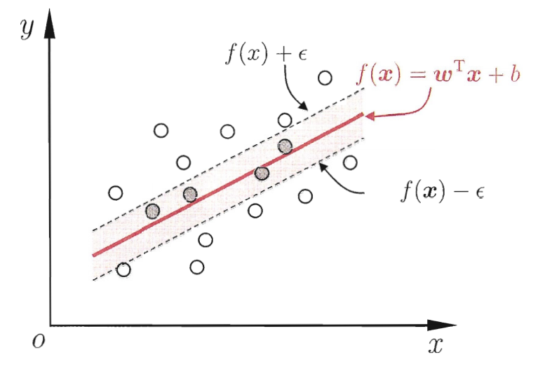

支持向量机
第六章
间隔与支持向量
如上图所示，在对+-分类时，我们希望找到一个较好的平面将他们分隔开来，直观上来说，这个平面能最”中间“，其鲁棒性最好。距离超平面最近的几个样本（图中圆圈的）被称作”支持向量“，因为它大体来确定了这个超平面的走向（其实其他点就是无用的了），而异类超平面之间的距离：
$$
\gamma = \frac {2}{||w||}
$$
被称作”间隔“。
直观上来说我们期待的是能够找到这个间隔最大的超平面作为分类标准，用数学式子表达如下（李宏毅老师课件，西瓜书里这里直接到标准式过度得不是很自然）：
现在需要简化，先做一个假设，即如果我们能把$y_n(w^Tx_n+b)$的范围确定到$\geq 1$，且这个1一定存在，也就是最小的是1，那么$margin(b,w) = \frac {1}{||w||}$，上面求max的也就简化了。这个假设很香，如何证明？
这里就再假设一下，就是我们能确保所有$y_n(w^Tx_n+b) \geq 1.23$都成立，但这时发现只要对$w,b$都除1.23那就可以改为1了。相悖，所以一定能找到最小的一个1。其实由于没有除以分子的$||w||$，值是可以随意改变的，我们之所以想要把它”定“下来是方便讨论，也可以从几何的角度去理解。
在对$\frac {1}{||w||}$做一下变形就可以得到SVM的标准式子：
$$
\underset {w,b}{min} \quad \frac 12 ||w||^2
$$
$$
s.t. y_i(w^Tx_i+b) \geq 1, i=1,2,…,m.
$$
对偶问题
上述的标准式子是凸二次规划，可以直接用现成的优化计算包完成，但这里主要介绍另一种高效的方式。
对标准式用拉格朗日乘子法[1]可得到其”对偶问题“(dual problem)：
$$
\underset {\alpha_i >0}{L(w,b,\alpha)} = \frac 12||w||^2+\sum_{i=1}^m\alpha_i(1-y_i(w^Tx_i+b))
$$
这个式子和标准式是等效的(又是李老师讲的噢)，当样本不满足标准式的2式时，这个对偶式子的右边那一坨就一定是负数，那么求$min$是无穷小，会被算法淘汰，当它是支持向量时，右边为0。这样这个式子很好的包含了前面两个。统一对偶式中的$min,max$：一定存在
$$
\underset {w,b}{min} , (\underset {\alpha}{max} L(w,b,\alpha)) \geq \underset {w,b}{min} , L(w,b,\alpha)
$$
其中式子右侧的$\alpha$为一定值。再拉格朗日中值：右式可以再变化为$\underset {all , \alpha}{max} , \underset {w,b}{min} , L(w,b,\alpha)$最终将这个大于等于强化为等号[2]，但需要满足KKT条件：
$$
\begin{cases}\alpha_i \geq 0 \\[2ex] y_if(x_i)-1 \geq 0 \\[2ex] a_i(y_if(x_i)-1) = 0\end{cases}
$$化简对偶式，计算对$w,b$的偏导数为0时的式子，带入进入消参，得到：
$$
\underset {\alpha}{max} , \sum_{i=1}^m \alpha_i-\frac 12 \sum_{i=1}^m\sum_{j=1}^m\alpha_i\alpha_jy_iy_jx_i^Tx_j
$$
其中$\sum_{i=1}^m\alpha_iy_i=0$和$a_i \geq 0$求解上式，一个方式就是直接的二次规划问题，但是这里介绍更高效的方式SMO方法。
其基本思路是固定$\alpha_i$以外的其他所有参数，求$\alpha_i$的极值。由于存在约束条件$\sum_{i=1}^m \alpha_iy_i=0$，若固定其他变量，$\alpha$可由他们导出。于是取两个变量$\alpha_i$和$\alpha_j$，代入3中的式子中更新他们的值。[3]
求出$\alpha$取值后的$f$表达式：$f(x) = \sum_{i=1}^m \alpha_iy_ix_i^Tx+b$
求解$b$，用所有支持向量求解出来的均值[4]
核函数
前面的例子中有一个前提就是能找到支持向量机，是可分的。但如果在这一维中无法分呢？解决方法是从原始空间映射到一个高维空间中，只要维度一定高，就一定可分，对于公式而言，只需要将其中的$x$转化为$\varphi(x)$，那对偶问题的公式中就会出现：
$$
\underset {\alpha}{max} , \sum_{i=1}^m \alpha_i-\frac 12 \sum_{i=1}^m\sum_{j=1}^m\alpha_i\alpha_jy_iy_j\varphi(x_i^T)\varphi(x_j)
$$
两个$\varphi$的相乘计算是很困难的，这里就需要使用我们的核函数$\kappa(.,.)$：
他将这个计算转换到了原始空间中，降低运算复杂度。但这里相当于对训练又多了一个参数，因为我们不知道什么样的比较合适，但常用的如下：
除此之外，我们还可以糅合多个核函数，如线性组合、直积等
软间隔与正则化
之前要求所有的分类要准确是”硬间隔“，但实际上我们就算找到时候的核函数也很难去找到一个合适的分割平面（要怕过拟合），因此我们可以允许一部分点被分错，即允许”软间隔“，如下图所示。
”软间隔“的优化目标可以表示如下：
$$
\underset {w,b}{min} \frac 12||w||^2+C\sum_{i=1}^m l_{0/1}(y_i(w^Tx+b)-1)
$$
其中$l_{0/1}$为”0/1损失函数”，常用的替代损失函数还有：hinge损失，指数损失和对率损失等，他们的曲线如下图所示：
引入”松弛变量“后，也可以用拉格朗日乘子法对其求解，与之前的”硬间隔“的主要区别在于对偶变量的约束不同（推导见书P131）。
对前面的”软间隔“的优化目标抽象一下的话：
$$
\underset {f}{min} ,, \Omega(f)+C\sum_{i=1}^m l(f(x_i),y_i)
$$
- 结构风险：前部分，用户意图，削弱假设空间
- 经验风险：后部分，模型与训练数据的拟合程度
其中的C可以条件这两者的侧重，这里有涉及”正则化“问题（对不希望得到的结果施以惩罚，从而使得优化过程趋向于希望目标），$\Omega(f)$为正则化项，$C$为正则化常数，$L_p$范数🍠为常用正则化项。
- $L_2$：分量均衡
- $L_0,L_1$：分量稀疏[5]
支持向量回归(SVR)
支持向量回归允许在一定区间内的错误不计。SVR函数可以表达为：
$$
\underset {w,b}{min} , \frac 12 ||w||^2+C\sum_{i=1}^m l_{\epsilon}(f(x_i)-y_i)
$$
这里的$l_{\epsilon}$为$\epsilon$-不敏感损失：
后文主要引入”松弛变量“[6]对公式进行推导。(P134)
核方法
不考虑偏移项的话，SVM和SVR都可以表达为$\kappa(x,x_i)$的线性组合，因此核函数对于他们都是十分重要的，而基于此发展出来的一系列学习方法就是核方法。(P137略)
后续扩展
[1] 这个方法附录有单独介绍
[2] 这里我感觉应该因为我拉格朗日没到位，所以理解上有困难
[3] 关于变量的选择，和SOM高效的解释在书P125，这里暂时不阐述了
[4] 这里他们求出来的值不应当都相等么
[5] 这里讲的范数还太浅了点
[6] 松弛变量的概念
碎碎念
巧克力豆奶确实有点容易腻呀🤮，只适合喝一点点。